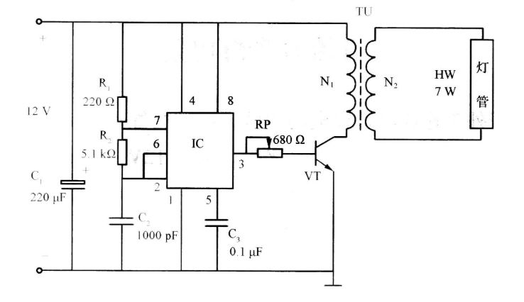

องค์ประกอบหลักของแผนผังวงจร
- แหล่งกำเนิดไฟฟ้า (Power Source):ส่วนที่ให้พลังงานแก่ระบบ เช่น แบตเตอรี่
- ตัวนำไฟฟ้า (Conductor):สายไฟหรือเส้นทางที่ใช้เชื่อมต่อส่วนประกอบต่างๆ
- อุปกรณ์อิเล็กทรอนิกส์ (Electronic Components):ชิ้นส่วนต่างๆ ที่มีสัญลักษณ์เฉพาะ เช่น ตัวต้านทาน (Resistor), ตัวเก็บประจุ (Capacitor), ไดโอด (Diode), และทรานซิสเตอร์ (Transistor)
- สัญลักษณ์มาตรฐาน:ใช้แทนอุปกรณ์แต่ละชนิด เพื่อให้เข้าใจง่ายและเป็นสากล
แผนผังวงจร
